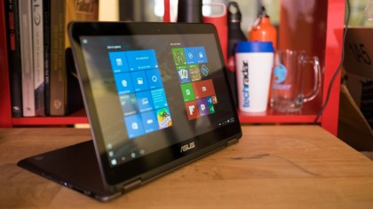

CPU: Intel Core M 6Y30 processor | Graphics: Intel HD Graphics 515 | RAM: 4GB | Screen: 13.3-inch, FHD (1,920 x 1,080) LED-backlit glare touchscreen | Storage: 128GB – 512GB SSD
When it comes to crafting an affordable Windows laptop with a premium feel, Asus takes the cake. The Asus ZenBook Flip UX360 in particular combines a mid-range price tag with a convertible form factor, a full-size trackpad and keyboard and an extensive array of ports – like HDMI and USB Type-A – that have been done away with virtually everywhere else. In the pre-2015 MacBook era, these features would be expected, but nowadays, they’re an anomaly given the standards of today’s laptops. Don’t go in expecting the ZenBook Flip UX360 to be old-fashioned, however, because as the name suggests, this is a notebook that prides itself on its ability to shapeshift 360 degrees, “flipping” seamlessly between tablet and laptop at will.